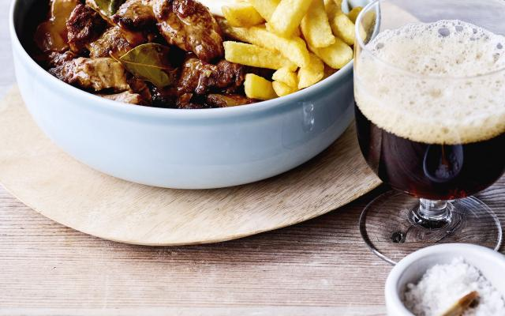

Stoofvlees met friet

Ingredienten
- 800g rundstoofvlees
- 2blaadjes laurier
- 330ml donker abdijbier
- 2eetlepels mosterd
- 1 ui
- 1eetlepel bloem
- 1snee witbrood
- boter
- peper en zout
Bereiding
- Verwarm een klontje boter in een stoofpot en fruit de ui glazig. Verhit daarnaast een bakpan met hete boter. Kruid het vlees met peper en zout, en bak het in porties zodat het een mooi goudgeel korstje krijgt.
- Doe het gebakken vlees telkens bij de ui in de stoofpot. Strooi over de laatste portie wat bloem en laat die even meebakken. Dit is om later de saus te helpen binden.
- Blus de pan met het bier, laat het bier opwarmen en giet daarna alles bij de uien. Voeg indien nodig water toe tot het vlees net onderstaat.
- Draai het vuur zo laag mogelijk. Doe de laurier erbij en leg er een met mosterd bestreken boterham bovenop. Laat ongeveer 2 uur rustig sudderen.
- Serveer de stoverij met verse frieten en mayonaise.